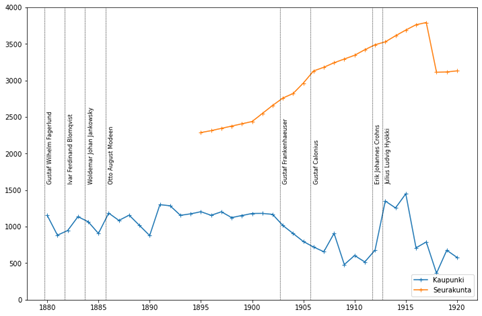
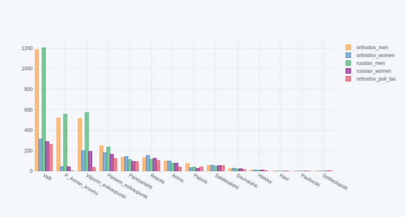
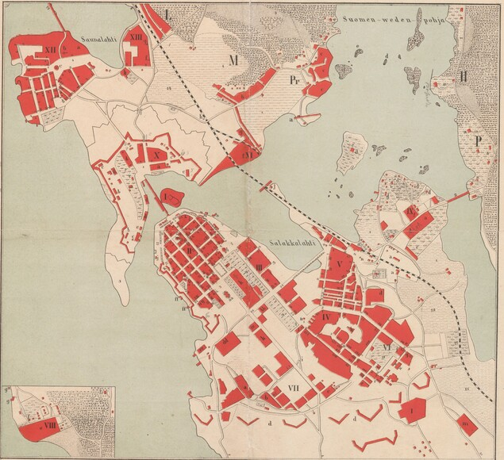
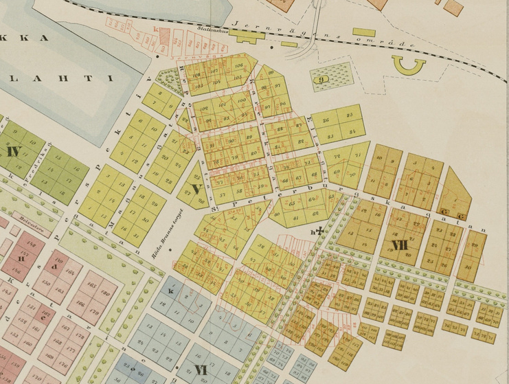

Johdanto
Viipurin väestö
- 1800-luvulla Viipurissa oli laaja venäläinen vähemmistö
- suurin osa ortodokseista oli venäläisiä
- ortodoksien tarkka määrä on epäselvää
- metrikat eivät säästyneet
Henkikirjat vuoden 1878
asetuksessa
- yhteiskuntaluokat
- värväys
- uskonto


Syyt
Neljä mahdollista
selitystä puutteille:
- tilastointialueiden muutos
- identiteetin muutos
- jäsenkätkentä
- henkikirjoituksen toimittajan resurssit
Tilastointialueet
Muuttuva ja sekava Viipuri
- kaupunginosien väliset rajat ovat epäselviä
- 1860 asemakaava hautasi alleen Pietarin esikaupungin
- käytännössä kaupunginosa vaihtui uusiin tontti kerrallaan

Viipuri 1876

Pietarin esikaupunki 1885
Viipurin maalaiskunta
- kaupungin rajojen (1817) ulkopuolelle syntyi epäsäännöllisiä
esikaupunkeja 1870-luvulta alkaen
- kaupungin ja maalaiskunnan henkikirjojen rajat epäselviä
- ortodoksisissa srk voi olla jäseniä laajalta alueelta
- Viipurin mlk oli yksi Suomen suurimmista kaupungeista
Ilmoitushalukkuus ja
identiteetit
Identiteetin muutos
- “ristiriitainen suhtautuminen ortodoksisuuteen” (Happonen 2009)
- ortodoksisuus politisoitui viimeistään Bobrikovin aikana
- ei selitä vuotuisia heilahteluja
Viitseliäisyys
- 1881 useat edellisenä vuonna ortodoksisiksi merkityt perheet jätetty
merkitsemättä
- oletetaan olevan luterilaisia
- (tämän takia kyselyissä ei pitäisi olla oletusvastauksia!)
- ilmoitushalukkuus on ilmeisesti matala
- alkuperäiset lomakkeet eivät ole säilyneet
Jäsenkätkentä
- Kannaksen ort. srk jättivät jäseniään kirjaamatta (Loima 2002)
- halu välttää poliittisia konflikteja
- henkikirjojen sabotaasi?
- passiivinen vastarinta venäläistämistä vastaan
- perustuslaillisten kesken oli eriäviä mielipiteitä
- tiettävästi koski vain asevelvollisten kirjaamista
Henkikirjoittajat
Kuka teki henkikirjat?
- henkikirjan allekirjoittat vaihtuvat säännöllisesti, monet vain 2
vuotta
- henkikirjoittajista vähän tietoa 1900-luvun puolelta
- useimpia ei löydy valtiokalenterista tai lääninhallituksen
nimikirjoista
- vaikea saada tietoa mahdollisista venäläistämiseen liittyvistä
potkuista
Syyt eroihin
- joillakin henkikirjoittajilla selvästi pienempi määrä ortodokseja
kuin toisilla
- eroja työinnossa?
- jotkut ovat saattaneet korjata uskontotietoja edellisten vuosien
perusteella
Lopuksi
Miksi tällä on väliä?
- lukumäärillä on väliä
- sisällissodan vaikutusten arviointi vaikeaa
- samoin etnisten ryhmien välisten suhteiden